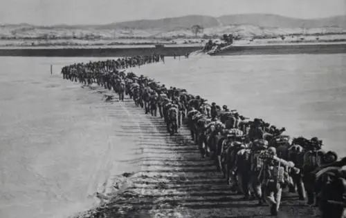
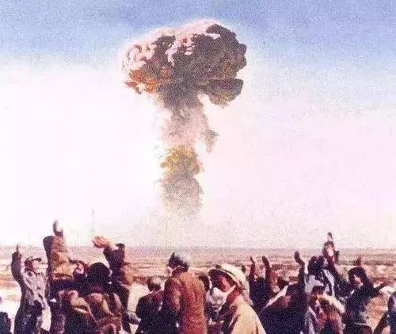

In the early days of the founding of the People's Republic of China, the situation at home and abroad was extremely difficult and complicated. As a result of the long war, the domestic economy was ruined and the people were destitute. Kuomintang remnants wait for an opportunity to destroy, banditry is serious. Some areas have not yet been liberated, and many grass-roots units have not yet established political power. The West, led by the United States, isolates us politically, blockades us economically and threatens us militarily. On June 25, 1950, the Korean Civil War broke out, followed by the U.S. invasion of Korea and the invasion of the Taiwan Strait by the 7th Fleet. The new People's Republic of China is under grave security threat. "One punch at a time, before all the blows come." After full discussion and comprehensive consideration, the CPC Central Committee and Chairman MAO Zedong made the strategic decision of "fighting the United States and aiding Korea and protecting our country". The war of resistance to the United States and Aid to Korea played the national prestige of new China, improved the prestige of the Communist Party of China in the people of the whole country, improved the national confidence and national pride of the Chinese people, maintained the peace of Asia and the world, new China stood firm. As Comrade Deng Xiaoping later said, with the founding of the People's Republic of China, "China obtained one qualification: people dare not look down upon us".

Volunteer soldiers crossed the Yalu River
Similarly, how to build socialism and how to promote China's modernization was also a completely new topic for the Communist Party of China when new China was founded. From learning from the Soviet Union to "taking the Soviet Union as a mirror", the CPC began to explore China's own path of socialist construction. In 1956, China's socialist transformation was completed, the basic socialist system was established, and socialist construction began on a large scale, making great achievements. In June 1954, Comrade MAO Zedong asked: "What can we build now? You can make tables and chairs, you can make tea bowls and teapots, you can grow food, you can grind it into flour, you can make paper, but not a car, not a plane, not a tank, not a tractor." Under the strong leadership of the COMMUNIST Party of China and through the self-reliance and hard work of the Chinese people, we soon achieved countless firsts in Chinese history. Produce the first plane, the first car, first tractor, developed by the first atomic bomb and hydrogen bomb has exploded, planes to develop its first man-made earth satellite launch, successfully developed the first atomic submarine launching, designed to build the first bridge, the nanjing Yangtze river bridge, synthetic bovine insulin, for the first time in the world The first successful cultivation of strong advantage indica hybrid rice. After more than 20 years of hard work, an independent and relatively complete industrial system and national economic system have been initially established. Deng Xiaoping once said, "If China had not had atomic bombs or hydrogen bombs or launched satellites since the 1960s, China would not be a major country with important influence and would not have the international status it has now." During this period, China also preliminarily solved the problem of feeding and dressing hundreds of millions of people, which was also recognized as a miracle of the world at that time.

The first atomic bomb exploded successfully
In those passionate years, the whole Party maintained a good spirit and the whole society formed a good social conduct, which was transformed into a powerful force for advancing socialist revolution and construction. Comrade Wang Jinxi, a worker in Daqing, shouted, "If oil workers roar, the earth should shake three times." The iron man spirit has brought unforgettable impression, memory and moving to the people of the whole country, inspiring and inspiring the people of the whole country to brave hardships and march forward bravely. The story of people in Linxian county, Henan province, cutting through mountains of Taihang mountains with simple tools and channelling water from Zhang River into Linxian county to build the red Flag Canal, an artificial river of heaven, is an epitome of the Chinese people's hard work at this time.
The socialist revolution and the establishment of the basic socialist system were a great endeavor in which the Party's first generation of central collective leadership with Comrade MAO Zedong at its core united the whole Party and the people of all ethnic groups in China and led them in making a great endeavor. They reflected the will of the Chinese people, were in line with China's realities and followed the trend of historical development. The most extensive and profound social transformation in the history of the Chinese nation has laid down the fundamental political premise and institutional foundation for all development and progress in contemporary China, and provided valuable experience, theoretical preparation and material foundation for the creation of socialism with Chinese characteristics.
During the new-democratic revolution, socialist revolution and construction period, the COMMUNIST Party of China united and led the Chinese people in making a great leap from "the sick man of East Asia" to standing up.